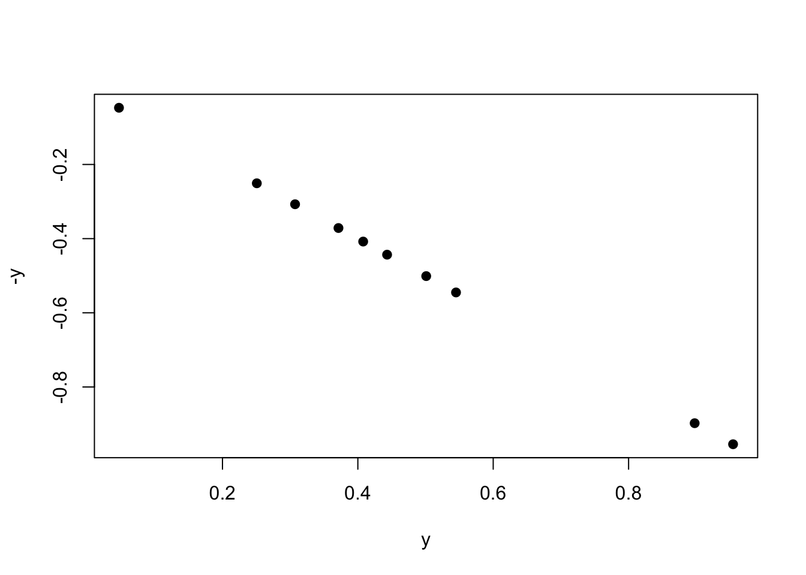
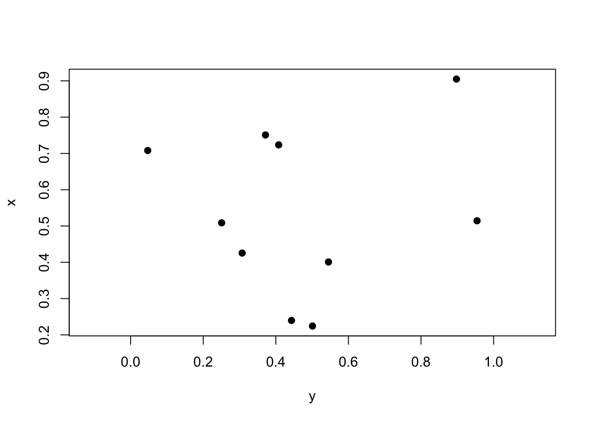

── Attaching core tidyverse packages ──────────────────────── tidyverse 2.0.0 ──
✔ dplyr 1.1.4 ✔ readr 2.1.5
✔ forcats 1.0.0 ✔ stringr 1.5.1
✔ ggplot2 3.5.2 ✔ tibble 3.3.0
✔ lubridate 1.9.4 ✔ tidyr 1.3.1
✔ purrr 1.1.0
── Conflicts ────────────────────────────────────────── tidyverse_conflicts() ──
✖ dplyr::filter() masks stats::filter()
✖ dplyr::lag() masks stats::lag()
ℹ Use the conflicted package (<http://conflicted.r-lib.org/>) to force all conflicts to become errors
14.1 Introduction
When we are comparing two continuous variables, we use two forms of tests: correlation to understand if there is a relationship between two variables, and linear regression to determine what that relationships is.
Remember - “if” is always correlation, and “what is it” is always linear regression when choosing a test for an exam.
14.2 Correlation
Correlation - denoted by \(\rho\) (“rho”) and not to be confused with \(p\) - is a measure of how closely related to continuous variables appear to be. This can vary from a purely negative relationship to a purely positive relationship, such that \(-1 \le \rho \le 1\) with \(\rho = 0\) indicating a random relationship between data.
We can visualize these as follows:
### ILLUSTRATIVE PURPOSES ONLY# create two random uniform distributionsy <-runif(10)x <-runif(10)
For example, two things compared to themselves have a \(\rho = 1\).
plot(y, y, pch =19)
cor(y, y)
[1] 1
As we can see above, the correlation is 1.
Plotting by the negative will be a correlation of -1.
plot(y, -y, pch =19)

cor(y, -y)
[1] -1
Lastly, two random variables plotted against each other should have \(\rho \approx 0\).
plot(y, x, pch =19, asp =1) # aspect ratio

cor(y, x) |>round(2)
[1] 0.09
14.2.1 Pearson’s
Pearson’s correlation coefficient is our value for parametric tests. We often denote our correlation coefficient as \(r\) and not \(\rho\) for this particular test. It is calculated as follows:
\[
r = \frac{\Sigma xy - (\frac{\Sigma x \Sigma y}{n})}{\sqrt{(\Sigma x^2 - \frac{(\Sigma x)^2}{n}})(\Sigma y^2 - \frac{(\Sigma y)^2}{n})}
\]
where \(x\) is variable 1, \(y\) is variable 2, and \(n\) is the total number of data point pairs.
In this class, we will be using R to calculate \(r\), which is done using the command cor. To ensure we are using the correct method, we need to set method = "pearson".
set.seed(8675309)### EXAMPLE DATAx <-c(1,2,5,3,4,5,8,7,9,6,10,12,15,20,25)y <-c(2,5,4,3,8,6,4,2,8,9,15,13,10,18,19)plot(x, y, pch =19)
cor(x, y, method ="pearson") |>round(2)
[1] 0.86
As we can see, these data are fairly positively correlated. As x increases, so does y. But how significant is this relationship?
Well, we can calculate two things - the amount of variation explained, which is \(r^2\), and the significance of the relationships, which is determined via a \(t\) test and the equation \(t=r \sqrt{\frac{n-2}{1-r^2}}\). This is a two-tailed distribution, with \(df = n-2\).
We can write a function to perform all of these options:
biol305_cor <-function(x=NA, y=NA, method ="pearson"){if(is.data.frame(x)==T){if(ncol(x)==2){ r <-cor(x[,1], x[,2], method = method) }else{ r <-cor(x, method = method) } r2 <- r r[r==1|r==-1] <-0 n <-2*nrow(x) }else{ r <-cor(x, y, method = method) n <-2*length(x) } t_val <- r*sqrt((n-2)/(1-r^2)) p <-pt(t_val, df = n -2) p[p >0.5] <-1- p[p >0.5] p[p >0.005] <-round(p[p >0.005],2) p[p >0.0005] <-round(p[p >0.0005],3) p[p >0.00005] <-round(p[p >0.00005],4) p[p <0.00005] <-"< 0.0001"if(is.data.frame(x)==T){print("Correlation:")print(round(r, 2))if(ncol(x) ==2){print(paste0("Degrees of freedom: ", n -2))print(paste0("t value: ", round(t_val, 2)))print(paste0("P value: ", p)) }if(ncol(x) >2){print(paste0("Degrees of freedom: ", n -2))print("")print("t value: ")print(round(t_val, 2))print("")print("P value: ")print(p) } }else{print(paste0("Correlation: ", round(r, 2)))print(paste0("Degrees of freedom: ", n -2))print(paste0("t value: ", round(t_val, 2)))print(paste0("P value: ", p)) }}
There we go! Our function printed out everything that we need.
14.2.2 Spearman’s
Spearman’s correlation is one of the non-parametric methods for our correlation tests. We can use this for ranked data or for non-parametric datasets. We do this the exact same way, except we change method = "spearman".
14.2.3 Other non-parametric methods
To be expanded upon, but not necessary for the class at present.
14.3 Regression
Regression is used when we want to know what the relationship is between two variables. Regression operates similar to ANOVA and correlation, providing us with the nature of the relationship, the strength of the relationship, and gives us values for calculating the relationship. For this class, we are only focusing on linear regression for relationships between linear variables.
The equation for a regression line is often written as \(y_i = \alpha + \beta x_i + e_i\), where \(\alpha\) is the \(y\) intercept, \(\beta\) is the slope, and \(e\) is the error around each point. We will not perform regression calculations by hand in this class.
14.3.1 Parametric
We will use out previous established x and y datasets that are strongly positively correlated for this example. The equation for calculating a linear relationship is lm, which stands for “linear model”. This uses equations like ANOVA, but can also use two vectors of data.
xy_linear <-lm(y ~ x)summary(xy_linear)
Call:
lm(formula = y ~ x)
Residuals:
Min 1Q Median 3Q Max
-5.1189 -1.4838 -0.5423 1.9757 5.7460
Coefficients:
Estimate Std. Error t value Pr(>|t|)
(Intercept) 2.1370 1.2825 1.666 0.12
x 0.7117 0.1169 6.086 3.87e-05 ***
---
Signif. codes: 0 '***' 0.001 '**' 0.01 '*' 0.05 '.' 0.1 ' ' 1
Residual standard error: 2.964 on 13 degrees of freedom
Multiple R-squared: 0.7402, Adjusted R-squared: 0.7202
F-statistic: 37.04 on 1 and 13 DF, p-value: 3.867e-05
As we can see, this returned an ANOVA table to use that tells us the value and significance of our intercept as well as the value and significance of the the slope (here, shown as x; it will always show the explanatory variable in this slot for the name).
Looking at the above, we can see that the slope is not significantly non-zero with a \(p = 0.12\), but that the slope is significantly non-zero with \(p < 0.0001\). We also have our \(R^2\) values returned, which is similar to the \(r\) we got for correlation. Indeed, our correlation was \(r = 0.86\), with \(r^2 = 0.74\), which is very similar to the Multiple R-squared shown in the above ANOVA table.
R has a built in function within ggplot that will add a linear model to our plot and will show error regions as well. First, we need to make sure our data are in a data.frame.
Just like that, we have created a plot of our linear regression. Note that you should always plot the lines only within the extent of the data; this is harder to do in other programs, but R does it for us!
R can also allow us to predict different values using our linear model:
# must be in data frame formattest_data <-data.frame(1:25)colnames(test_data) <-"x"# must be same as explanatory in datapredict(xy_linear, test_data)